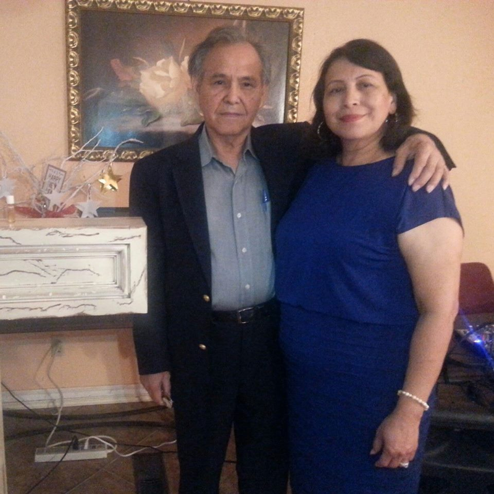

Templo La Hermosa OKC
Come Join us and let us rejoice in the presence of the Lord!
Pastores Enrique y Letica Olmos

Youth Pastor Carlos Rodriguez

Services: Wednesday @ 7PM and Sunday @ 2PM
2 Timothy 3:14-17
"Yesterday, we saw how King Solomon’s life illustrated the peril of compromise. Concession begins in a seemingly insignificant way. For instance, someone might want you to make a financial decision that you know in your heart is unwise. But you go along with the plan because you don’t want to hurt the other person’s feelings. You have compromised the message of the Holy Spirit, who warned you.
Small compromises lead to more serious ones. With each successive concession, our conscience is weakened. Ultimately, whenever we give way to evil—whether we let go of a doctrinal belief or simply listen to music that taints our thoughts—we always lose.
We compromise for a variety of reasons. Many do so from a fear of rejection or of being unappreciated. Some choose this route to avoid conflict. Still others may begin to doubt God’s trustworthiness or goodness; as a result, they give up on Him, compromising their basic beliefs and undermining their reason for assurance.
To be men and women who are strong enough to resist making concessions, we need to develop some essential armor. First, we must have strong convictions about the Bible and depend on it as a guide for daily living. Next, we need to have faith in God’s promise to supply all of our needs. Finally, we must find the courage to trust in Him, even when we are misunderstood, persecuted, or falsely accused. When we surrender our life to God, He replaces enslavement to compromise with security in Him."
Upcoming events

Recent Service
Contact Info: Pastora Leticia Olmos: (405)-824-3478 | Youth Pastor Carlos: (405)-404-7117
Location: 131 SW 25th, Oklahoma City, OK, 73109
Follow us on Facebook!